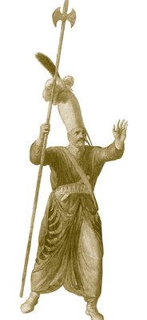

ZÜLÜFLÜ BALTACILAR (TEBERDARAN-I HASSA)
Zülüflü Baltacılar Enderun teşkilatının önemlice bir kısmıdır. Baltacılar, saray hizmetlerinde ve Harem’in odun ihtiyacının temininde kullanılan saray hizmetlileri ve kapıkulu mensuplarıdır. Sefer sırasında ordunun önünden ilerleyerek askerlerin yürüyüşüne mâni olacak ağaçları kestikleri için bu isimle anıldıkları rivayet edilir. Koğuşları Mehterhâne’nin sağ tarafında Harem ile Has Ahur arasında bulunur. Harem’in Araba Kapısı’nın sağ tarafındaki kapıdan girilen Zülüflü Baltacılar Koğuşu sarayın en eski binalarındandır. Fatih devrinde yaptırılan koğuşların ön yüzünde bulunan,
“Zıll-ı Yezdân (Hakk’ın gölgesi) Han Murad-ı cihan
Şâh-ı sâhibkırân u kutb-ı zamân (Hükümdarların şahı, zamanın kutbu)
Fatih-i mülket-i taht-ı Tebriz (Memleketler fatihi, Tebriz tahtının sahibi)
Mâlik-i mülk-i Şirvan u Revan (Şirvan ve Revan’ın sahibi)”
şeklinde başlayan otuz mısralık kitabede, 1587’de Sultan III. Murad Han tarafından Zülüflü Baltacılar Koğuşu’nun tamir ettirildiğinden bahsedilmektedir.
Zülüflü Baltacılar Kapısı’ndan girildikten sonra eğimden dolayı merdivenlerle Zülüflü Baltacılar Avlusu’na inilir. Burası küçük bir sokağı andırır. Avlunun bir tarafı koğuşlara diğer tarafı ise hamam, çeşme, mescit gibi hizmet yapılarına aittir. İkinci kat sayılabilecek merdivenle çıkılan yerde ise -ihtimal- zülüflü baltacılar ağası ile rütbelilerin kaldığı- odacıklar vardır ki bu odalar bütün koğuşa hâkimdir. Bu odalardan birinin duvarında bulunan kuş kafesi resmi koruyuculuğu temsil etmektedir ki bu da zülüflü baltacıların vazife alanlarıyla mütenasiptir. Sarayın en güzel yerlerinden biri Zülüflü Baltacılar Koğuşu’dur. Çini kaplı duvarlar ve ince kalem işi ile tezyin edilmiş ahşap kısımlar görülmeye değerdir. Çubuk odası zülüflü baltacıların dinlendiği bir mekândı. Yatakhane olarak kullanılan asıl büyük koğuş iki kattan oluşmaktadır ve alt katta acemiler, üst katta ise tecrübeli zülüflü baltacılar kalırdı. 15. yüzyıldan beri mevcut olan bu mekân, Sultan llI. Murad Han zamanında 1587’de Mimar Davud Ağa tarafından hemen hemen şimdiki şekline getirilmiştir, genişletilmiştir. Sokak içinde bulunan caminin mihrabı renkli İznik çinileriyle kaplıdır. 1587’den sonra koğuşta yapılan ilk esaslı değişiklik II. Osman’ın emriyle olmuştur.
Padişahın her daim koruyucusu olan zülüflü baltacılar, önceleri devşirmeler arasından, son zamanlarda ise Kastamonu dağ köylerinden getirilen çocuklar arasından seçilirdi. Seçilenlerin devşirmelerde uygulanan kriterlere uygun olmasına ayrı bir özen gösterilirdi. Zülüflü Baltacılar Koğuşu’nda kalanların sayısı 120–200 nefer civarındaydı; başlangıçta kapı ağasına, 18. yüzyıldan sonra ise Silahdar ağaya bağlanmışlardı. En büyük amir baltacılar kethüdasıydı; ardından ikinci baş baltacı, divanhâneci ve kilercibaşı baltacısı gelir. Zülüflü baltacıların dolama denilen lacivert elbiselerinin yakaları iki tarafını göremeyecek kadar yüksekti. Bu, Harem’de iş gördükleri esnada etrafı görmelerine mâni olurdu. Başlıklarının iki tarafından iki perçem sarkardı; bu yüzden kendilerine zülüflü denmektedir.
Zülüflü baltacılar Harem’e odun taşınması, tahtın gerektiği zaman Bâbü’s saade önüne getirilip götürülmesi, Divanhâne’nin muhafazası ve bakımı gibi birçok görevde bulunurlardı. Zülüflü baltacılar, sefer esnasında muzaffer olunması için sancak altında sürekli Kur’an-ı Kerim okurlardı. Prut Savaşı’nın en önemli ismi Baltacı Mehmed Paşa ve Girit kuşatması sırasında komutanlık yapan Deli Hüseyin Paşa bu ocağın tarihe geçmiş simalarındandırlar.

Zülüflü baltacı